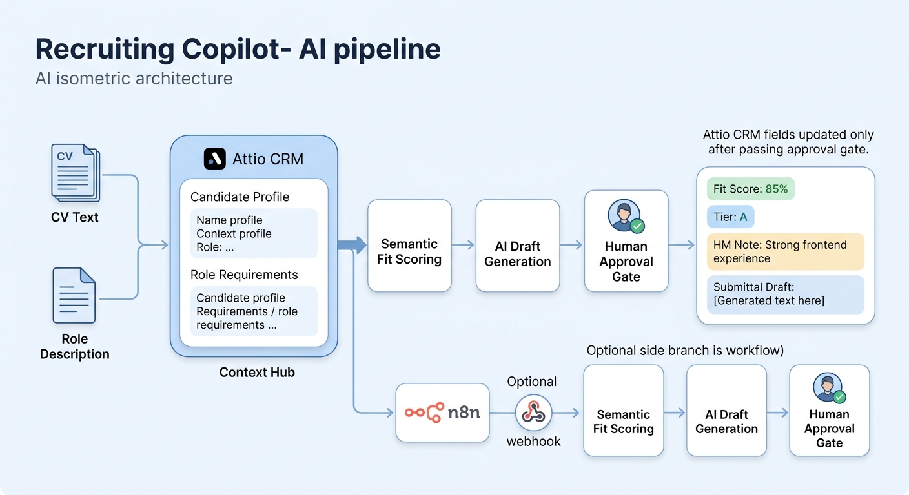

Research, score, draft — you approve first.
Attio holds the context. We research candidates, score semantic fit against the role, and draft HM notes and client submittals — nothing writes to the CRM until a human approves.
The idea
Your CRM already knows the role. We do the research.
Recruiters spend hours reading CVs, writing notes, and ranking candidates manually. Recruiting Copilot lives inside Attio — on every Person record — and turns CV + role context into fit scores, tier labels, and ready-to-send drafts. You stay in control: review, edit one line, then approve.
Without Copilot
Context scattered across docs and tabs. Subjective gut-feel ranking. Notes rewritten from scratch. Risk of auto-sync polluting your CRM with bad data.
With Copilot
One widget on the Person record. Semantic fit % against the linked Role. Pros, cons, gaps, HM note, and client submittal — all staged for approval before write-back.
How it works
Four steps, one approval gate
Paste a CV, click Research, review the bundle, approve. Fields populate and the recruiting list re-sorts by fit score.
Load context
Attio GraphQL loads the Person's CV text and linked Role description — no copy-paste between tools.
Score fit
Superlinked SIE embeds CV vs. role and returns a fit % plus tier: Strong, Good, Weak, or Unknown.
Generate drafts
Gemini produces pros/cons, gaps, a two-liner, HM note, and client submittal as structured JSON.
Approve & write
You edit if needed, hit Approve — only then does Attio REST update fit_score, tier, and notes.
Nothing hits the CRM until you approve. No silent auto-writes. No surprise field updates.
Architecture
Shared core, two isolated paths
The Attio app calls server functions → shared pipeline in
packages/core. A separate n8n webhook hits the same
core via a standalone API — if n8n fails, the Attio demo still
works.

2-minute demo
What to show the jury
Open the Recruiting list, research one candidate live, approve, bulk-research two more, flash the submittal draft.
- 1 Open the Recruiting list — candidates visible, no fit scores yet.
- 2 Open a person → paste CV text → click Research.
- 3 Review fit %, tier, pros/cons, 2-liner, HM note → edit one line → Approve.
-
4 Fields populate; list re-sorts by
fit_score. - 5 Bulk-research two more candidates — top fit is obvious.
- 6 Flash the client submittal draft — nothing is sent without approval.
- 7 Optional: Click Listen to summary (SLNG) for a spoken top-3 overview.
- 8 Optional: Show n8n workflow / live webhook trigger.